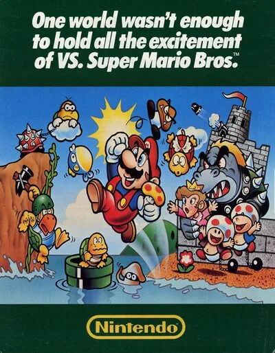
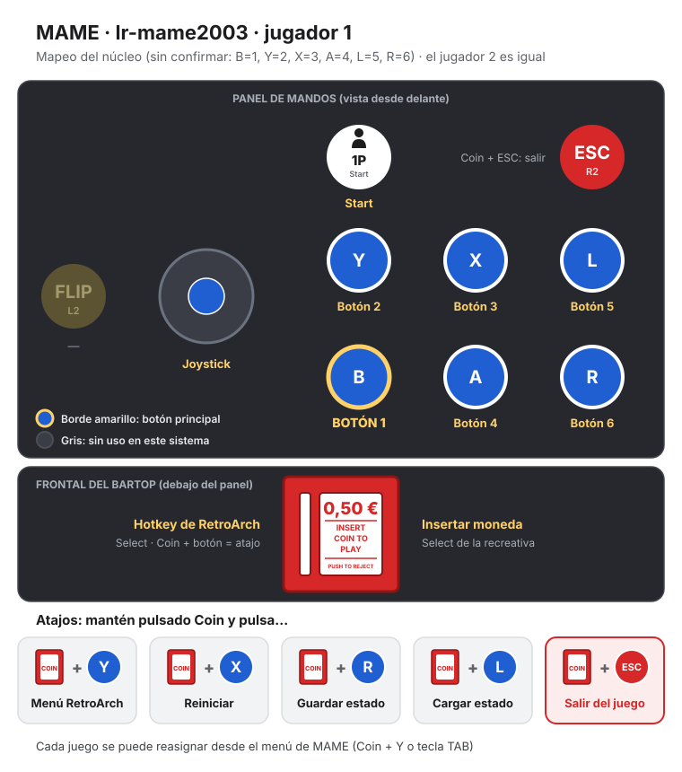

MAME (lr-mame2003)
Vs. Super Mario Bros.
- Año: 1986
- Desarrollador: Nintendo
- Género: Plataformas / Correr, saltar y desplazamiento
- Jugadores: 2 jugadores
El juego describe las aventuras de los hermanos Mario y Luigi, personajes que ya protagonizaron el arcade Mario Bros. de 1983. En esta ocasión ambos deben rescatar a la Princesa Peach del Reino Champiñón que fue secuestrada por el rey de los Koopas, Bowser. A través de ocho diferentes niveles de juego, los jugadores pueden controlar a alguno de los dos hermanos y deben enfrentarse finalmente tras los niveles correspondientes de cada mundo a los monstruos de cada castillo para liberar a Peach.
ARGUMENTO
Super Mario Bros. tiene lugar en el pacífico Reino Champiñón, donde viven hongos antropomorfos, que fue invadido por los Koopa, una tribu de tortugas. El tranquilo pueblo es convertido en piedra y ladrillos, y el reino de los champiñones se va a la ruina. La única que puede deshacer el influjo mágico de ellos es la Princesa Peach, hija del Rey Champiñón. Desafortunadamente, está en las garras del Rey Tortuga Koopa, Bowser.
Mario, un humano residente en el Reino Champiñón, escucha las llamadas de socorro de la Princesa, y junto a su hermano Luigi se dispone a rescatarla y expulsar a los invasores Koopas del reino.
PERSONAJES
MARIO
En Donkey Kong, de 1981, su participación fue bajo el nombre de "Jumpman",1 cuya misión era rescatar a Pauline, la damisela en apuros secuestrada por un simio llamado Donkey Kong. Dos años después, Mario fue acompañado por su hermano Luigi en otro juego arcade, llamado Mario Bros., el cual fue realizado a modo de spin-off de Jumpman, tras su primeriza participación donde era un fontanero. Para esa nueva adaptación, Mario debía exterminar diversas plagas que salían por tuberías. Su nuevo nombre fue inspirado por el del entonces propietario de las oficinas de la compañía, Mario Segali. De acuerdo al equipo diseñador de Nintendo, Segali y Jumpman tenían características físicas muy similares entre sí, por lo que fue a partir de entonces que reemplazaron el anterior nombre —Jumpman—, por el de Mario.
Ante la tecnología en desarrollo con la que contaban durante esa generación, los diseñadores de Mario no podían animarlo perfectamente en cada uno de sus movimientos, en ocasiones cometiendo errores no intencionados como hacer desaparecer alguna de las extremidades del personaje. Debido a ello, optaron por agregarle ciertos detalles para solucionar dichos problemas técnicos. Fue entonces que Mario comenzó a contar con camisa interior, guantes, sombrero y bigote de colores sólidos; elementos que figurarían en las siguientes adaptaciones, brindándole un toque distintivo al personaje.
Debido a ello, cuando se oye hablar de Super Mario, comúnmente se relaciona con el fontanero con bigote, que viste camisa roja, pantalones azules con tirantes y realiza saltos descomunales. Cuando coge un champiñón se transforma en Super Mario —aumenta de tamaño—, cuando coge una flor de fuego, en Fire Mario —adquiere la capacidad de lanzar bolas de fuego—, y cuando coge una estrella se vuelve invencible ante los ataques, pero solo por un tiempo limitado.
LUIGI
Luigi, al igual que su hermano Mario, se encarga de rescatar a la Princesa Peach. En este caso, aparece como segundo personaje, seleccionable para el segundo mando. Posee habilidades similares a las de Mario, diferenciándose en el color de su traje: sombrero y camisa interior verde y mono blanco. Cuando adquiere una flor, su traje es igual que el de Fire Mario, pero cambiando el rojo por el verde.
PRINCESA PEACH
"La damisela en apuros", Peach vive en un gran castillo rodeada de sus fieles sirvientes Toad. Para infortunio de ella, es secuestrada por el Rey Koopa, pero solicita la ayuda de Mario para que la rescate de su enemigo.
Peach solo aparece al final del juego tras derrotar al último Koopa. Usa un vestido rosa y una corona sobre su cabello pelirojo, el cual en versiones posteriores sería cambiado a rubio.
REY KOOPA
Rey Koopa es el archienemigo de la serie. Una tortuga antropomorfa más grande que un humano, quien invade el Reino Champiñón para apoderarse de él.
En el juego, el Rey Koopa aparece al final del cuarto nivel de cada mundo del juego. En estas áreas, Mario o Luigi deben tomar un hacha situada detrás del Rey Koopa, con la cual cortan el puente enviándolo a la lava. En los 7 primeros encuentros el ataque por bolas de fuego —otro modo de vencerlo— convertía al Rey Koopa en un enemigo menor, dándose a entender que el bandido original era el del octavo mundo y los otros siete, solo súbditos disfrazados, como un Goomba, un Hammer Bro, un Lakitu, etc...
OTROS PERSONAJES
Toad: es un habitante y guardián del Reino Champiñón. Aparece al final de los 7 primeros castillos, mostrando la conocida frase: Thank you Mario! But our princess is in another castle. (¡Gracias Mario! Pero nuestra princesa está en otro castillo).
Koopa Troopa: son seres parecidos a tortugas, pertenecientes al ejército Koopa. Como son el más bajo rango de los miembros del ejército, solo patrullan a pie sus zonas asignadas. Pueden ser utilizados como proyectiles después de hacer que se escondan en sus caparazones —saltando una vez para que se escondan, dos para lanzarlos—. En el juego aparecen dos tipos de Troopas: los verdes, que solo siguen un sentido y no lo cambian al menos que se choquen con un obstáculo; y los rojos, que al llegar a un precipicio cambian de sentido (también cuando chocan con un obstáculo). Cuando un caparazón no está en la pantalla, se desvanece. También hay unos que poseen alas (verdes y rojos), pero solo pueden ascender a una altura determinada —otros por lo que en lugar de volar, simplemente saltan — conocidos como Paratroopa o Parakoopa. Estos también pueden ser utilizados como proyectiles — saltando una vez pierden sus alas, dos para que se escondan en sus caparazones, y tres para lanzarlos. Al igual como los que no tienen alas, los verdes solo siguen un sentido y no lo cambian a menos que choquen con un obstáculo, y los rojos que sí lo cambian al chocar con un precipicio (también si chocan con un obstáculo). Ambas clases (con alas y sin alas) y tipos (verdes y rojos) son vencidos automáticamente con la bola de fuego o con una estrella.
Lakitu: también del ejército Koopa, se asemejan a los Koopa Troopa, con la diferencia de que estos son más pequeños, usan gafas y vuelan sobre una nube sonriente con líneas verdes. Su característica principal es arrojar pequeñas tortugas con caparazón de pinchos, llamados Spiny. Se puede vencer a Lakitu saltando sobre él, con bolas de fuego o con una estrella; a diferencia de los Spiny, sobre los que no se puede saltar por tener pinchos, por lo que para matar a un Spiny, hay que atacarle con una bola de fuego o con una estrella.
Planta piraña: enemigo que se parece a una trampa para moscas y que emerge de las tuberías. Suele ascender y descender periódicamente. Se les vence con bolas de fuego, como a Bowser y a los enemigos regulares o con una estrella, como a todos. Cuando Mario o Luigi se encuentran junto a la tubería, esta planta no aparece hasta que se le alejen.
Podoboo: aparece en las fases de castillo. Son bolas de fuego vivientes que saltan de la lava periódicamente.
Hammer Bros.: de apariencia similar a los Koopa Troopa, con la diferencia de que estos usan armaduras y que estos no avanzan lateralmente, sino que saltan y lanzan martillos; para eliminarlos, hay que saltar sobre ellos o atacarlos con bolas de fuego o con una estrella.
Buzzy Beetle: criatura amarilla con un caparazón negro. Son inmunes a las bolas de fuego, pero pueden ser derrotados de manera similar a los Koopa Troopa: saltando sobre ellos y empujándolos haciéndolos caer a un abismo como a los verdes, perdiéndolos de la pantalla, o con una estrella (con esta última se los derrota automáticamente).
Bullet Bill: grandes misiles de color negro parecidos a las bombas Fat Man, que son lanzados desde los cañones Bill Blasters. Al igual que los Buzzy Beetle, son inmunes a las bolas de fuego, pero pueden ser derrotados saltando sobre estos o con una estrella.
Criaturas marinas: durante las fases acuáticas aparecen una serie de enemigos que, al igual que los anteriores, con solo el contacto, Mario pierde una vida. Estos son: Blooper (similar a un calamar) y Cheep Cheeps (similar a un pez). Los Blooper y los Cheep Cheeps son derrotados únicamente lanzándoles bolas de fuego. Sin embargo, los Cheep Cheeps también pueden aparecer en lugares sin agua y en este caso la única manera de derrotarlos es saltando sobre ellos, lanzándole bolas de fuego o con una estrella. En el juego hay dos tipos de Cheep Cheeps: los rojos que aparecen tanto en el agua como fuera de ella y se mueven con rapidez, y los grises que solo aparecen en el agua y se mueven con lentitud.
JUEGO
El jugador toma el rol de Mario o, en caso de ser el segundo jugador, presionando "Select" en su control, de Luigi, hermano del primero. El objetivo es recorrer el Reino Champiñón para derrotar a las fuerzas del Rey Koopa y salvar a la Princesa Peach. Si reciben un contacto enemigo, se pierde una vida, por ello, los hermanos Mario tienen un primer ataque que consiste simplemente en saltar sobre el enemigo —presionando "A" del control original—, siendo los champiñones conocidos como Goombas los primeros en aparecer; igualmente es posible saltar sobre los Koopa Troopas, y saltando una segunda vez sobre ellos es posible lanzar su caparazón. Al patear este caparazón, se puede derrotar también a los enemigos que se encuentran delante, con el inconveniente de que si hay un obstáculo, el caparazón regresa y puede herir a Mario o Luigi. Si Mario o Luigi cogen un champiñón aumentan de tamaño, y pueden ser heridos hasta dos veces antes de perder una vida (conociéndose esta transformación como Super Mario/Luigi); y cogiendo una flor (Fire Mario/Luigi), obtienen la habilidad de lanzar bolas de fuego con un máximo de dos por vez —presionando una vez "B" del control—. Algunos enemigos no pueden ser derrotados saltando sobre ellos; estos solo pueden ser eliminados con un caparazón o con las bolas de fuego, o bien al ser tocados por Star Mario/Luigi.
Mario o Luigi pueden ser heridos al tocar al enemigo. Si el enemigo toca a Super Mario/Luigi o Fire Mario/Luigi, el personaje regresa a su pequeña forma original, pero si ya estaba en su forma original se pierde una vida. El punto desde donde inicia Mario después de perder una vida, depende de hasta donde se haya avanzado en el recorrido. En cada nivel (excepto en el mundo 8 y en los castillos) hay un checkpoint. Si el personaje pierde la vida antes de tal punto, vuelve a iniciar desde el principio del nivel, pero si la pierde pasado el punto, inicia desde el checkpoint. Mario o Luigi pueden coger también una estrella y volverse invulnerables por un tiempo limitado. Star Mario/Luigi (como se le conoce a la transformación) pueden avanzar sobre varios obstáculos sin problemas, y al contacto con el enemigo, este último es derrotado. Pero esto no sucede si cae a un precipicio, a la lava o si se acaba el tiempo, ya que en esos casos se perdería una vida.
NIVELES
El juego consta de 8 mundos con 4 niveles cada uno — mostrándose como nivel 1-1, 1-2... 1-4, 2-1 y así sucesivamente. Cada nivel es diferente, al igual que su banda sonora. Hay cuatro estilos diferentes de mundos: el principal es el del Reino Champiñón, lleno de bloques de ladrillos o setas gigantes, y pueden ser tanto de día o de noche; niveles subterráneos, a los que se accede a través de tuberías; niveles acuáticos, los cuales deben ser cruzados nadando; y castillos, que son todos los cuartos niveles. Al final de los niveles 1, 2 o 3 de cada mundo hay un asta blanca con una bandera verde en la cual Mario o Luigi deben izar la bandera para poder acceder al siguiente nivel. Para hacerlo cuentan con un límite de tiempo. El objetivo es llegar al cuarto nivel de cada mundo, es decir, al castillo. Al final de cada castillo, Mario o Luigi debe enfrentarse al Rey Koopa. Si uno de ellos lanza cinco balazos sobre él, se descubre que en realidad era solo un disfraz, y el verdadero se encuentra en otra parte. A partir del mundo 6, el Rey Koopa lanza martillos y a su vez fuego. Hay otra manera de derrotarlo: al final del puente donde se encuentra el Rey Koopa hay un hacha, que al tocarla corta las cuerdas del puente, haciendo caer al Rey Koopa en la lava. Tras esto, Mario o Luigi se acerca a un guardia del reino que dice "Thank you Mario [or Luigi]! But our princess is in another castle!" (¡Gracias Mario [o Luigi]! Pero nuestra princesa está en otro castillo). Si se completa el cuarto nivel se accede al siguiente mundo.
OBJETIVOS Y PUNTUACIÓN
Durante el juego aparecen diferentes objetos que el jugador puede ir cogiendo para avanzar de una manera más fácil, o simplemente para aumentar la puntuación.
- Los bloques —en los niveles superficiales son de color amarillo o plateado mientras que en los subterráneos son de color azul—, que pueden tener o no otros objetos ocultos dentro de ellos, algunos son invisibles hasta que se descubre el sitio en el que se encuentran;
- El bloque de interrogación, que es el primero en observarse. El contenido de este puede variar, ya que puede contener: 1 moneda 1 champiñón rojo 1 champiñón verde 1 flor 1 estrella
- La estrella, que vuelve invulnerable durante unos segundos a Mario/Luigi (Star Mario/Luigi);
- La planta creciente (beanstalk), que está oculta en bloques y permite a Mario trepar por ella al cielo, acceder al bonus del nivel y recoger un gran número de monedas.
- Las monedas, que ayudan a aumentar la puntuación general. Tras recoger 100 de ellas, se obtiene una vida extra.31
Como juego de plataformas, Super Mario presenta un sistema de puntuación, basado en tres medios fundamentales:
- Cada nivel tiene un límite de tiempo —el cual va reduciéndose a medida que se avanza a los niveles finales— que influye en el puntaje. Mientras menos se demore en finalizar un nivel, mayor será el puntaje;
- Consiguiendo monedas que aparecen en todos los niveles, algunas a simple vista, otras dentro de bloques o al ingresar en determinados Warp Pipes (tuberías transportadoras) e incluso ocultas.
- Derrotando a los enemigos que aparecen durante cada nivel. Saltando sobre varios enemigos consecutivamente se hace un combo, duplicando así los puntos obtenidos normalmente y además una vida extra, aunque también se puede hacer un combo saltando sobre una tortuga y pateándola hacia 8 o más enemigos le dan al jugador una vida extra. Pero después de 8 enemigos derrotados, del noveno en adelante da una vida extra por cada enemigo derrotado.
ITEMS
- Champiñón rojo, que convierte a Mario/Luigi en Super Mario/Luigi;
- Champiñón verde, que otorga una vida extra. En la mayoría de los casos se encuentran ocultos, salen de bloques que, pese a estar en los niveles, son invisibles hasta que se los descubre saltando donde no parece haber nada, por lo que no se obtienen en los bloques de interrogación;3
- Flor de fuego, que convierte a Mario/Luigi en Fire Mario/Luigi con la posibilidad de lanzar bolas de fuego, estas solo aparecen después de que Mario/Luigi ha obtenido un champiñón, es decir, no pueden aparecer durante la etapa inicial de Mario/Luigi;
- Estrella, hace a Mario/Luigi inmune a todo (excepto precipicios) pero por tiempo limitado
WARP PIPES Y WARP ZONES
En la mayoría de los niveles hay una serie de tuberías que pueden cumplir diversas funciones. De algunas pueden salir periódicamente plantas piraña, en otras pueden entrar Mario y Luigi y encontrarse con secciones de tipo acuático o subterráneo donde pueden recolectar monedas y otros ítems. También son útiles en el sentido de que al salir por otra tubería, lo hacen en una sección más avanzada del nivel original, es decir, funcionan como atajos, acortando de esta forma la distancia que debe recorrerse. A estas tuberías se les conoce como "Warp Pipes".
Otro tipo de Warp Pipes especiales que los jugadores pueden usar se conocen como "Warp Zones" y sirven para saltar de un mundo a otro. Hay tres de ellas: una está en el nivel 1-2 y es alcanzada caminando por encima de los bloques del techo casi al final del nivel(en esta zona se puede hacer el truco para llegar al nivel -1). Esta zona permite que el personaje salte a los mundos 2, 3 o 4, sin tener que pasar por los mundos anteriores. Las otras dos están en el nivel 4-2; una se alcanza de manera semejante a la que está en 1-2 pero esta permite solamente el acceso al mundo 5. La otra se alcanza a través de un beanstalk (planta creciente o racimo, también en el 4-2), y permite que el jugador salte a continuación a los mundos 6, 7 u 8.
FINALIZACIÓN DEL JUEGO
Cuando llega al nivel 8-4, Mario se encuentra dentro de un castillo, como los primeros, en forma de laberinto. Al pasar dicho laberinto, se encuentra nuevamente con Rey Koopa, que lanza bolas de fuego y martillos. De manera similar a las anteriores, se le vence de las dos formas posibles. Luego de derrotarlo, Mario avanza hacia el lugar en donde en las fases anteriores se encontraba con Toad, aunque esta vez aparece la Princesa Peach diciendo "Thank you Mario [o Luigi]! Your quest is over. We present you a new quest. Push button B to select a world" (¡Gracias Mario [o Luigi]! Tu búsqueda ha terminado. Te presentamos una nueva búsqueda. Presione B para seleccionar un mundo).
Tras ganar el juego, el jugador tiene la opción de reiniciarlo, pero en modo difícil, donde todos los Goombas son reemplazados por Buzzy Beetles (que son como los Koopa Troopa pero que no pueden ser derrotados con bolas de fuego) y todos los enemigos aumentan su velocidad. Además, los elevadores se reducen de tamaño. Hay también un número creciente de peligros en los mundos. Por ejemplo, en el mundo 1-3 aparecen las balas de cañón que vuelan a través de la pantalla, las cuales normalmente no aparecen hasta más adelante, como en el mundo 5-3.
Controles
que B corra y lance bolas de fuego y A salte.
Versión de recreativa de Super Mario Bros. Se juega como con un mando de NES.
| Panel | Juego |
|---|---|
 | Mover |
 | Correr / lanzar bolas de fuego (B de la NES) |
 | Saltar (A de la NES) |
  | Empezar |
 | Meter una moneda |
+  | Salir del juego |
El panel en MAME (lr-mame2003)


Argumento
Recopilado de internet (2026-11-03). Lo marcado con ⚠️ no está probado en la bartop.
Bowser ha raptado a la princesa Toadstool y Mario cruza el Reino Champiñón para rescatarla.
Final: tras vencer a Bowser en el último castillo, Mario rescata a la princesa.
Fuentes
Jugabilidad
Recopilado de internet (2026-11-03). Lo marcado con ⚠️ no está probado en la bartop.
- Tipo de juego: plataformas de Nintendo (1986), versión de recreativa de Super Mario Bros. para el sistema Nintendo VS.
- Más difícil que la de NES, con algunos niveles cambiados. ⚠️
- Botones como en la NES: B corre y lanza bolas de fuego; A salta.
- Mejoras: el champiñón hace grande a Mario (y le deja romper ladrillos), la flor le da bolas de fuego y la estrella lo hace invencible.
- Vidas extra: con el champiñón verde, con 100 monedas o encadenando enemigos.
Fuentes
Guía de niveles
Recopilado de internet (2026-11-03). Lo marcado con ⚠️ no está probado en la bartop.
Son 8 mundos de 4 niveles; el último de cada mundo es un castillo con un Bowser (falso, salvo en el último).
Fuentes
Objetos
Recopilado de internet (2026-11-03). Lo marcado con ⚠️ no está probado en la bartop.
| Objeto | Qué hace |
|---|---|
| Champiñón | Mario crece |
| Flor de fuego | Bolas de fuego |
| Estrella | Invencible un rato |
| Champiñón verde | Una vida más |
| Moneda | Con 100, una vida |
Fuentes
Trucos y secretos
Recopilado de internet (2026-11-03). Lo marcado con ⚠️ no está probado en la bartop.
Secretos
- Tuberías de atajo (warp zones): llevan a mundos más avanzados, como en la versión de NES. ⚠️
Fuentes
Longplay

Partida completa de la recreativa (45 min), de World of Longplays: Arcade Longplay [420] VS. Super Mario Bros..